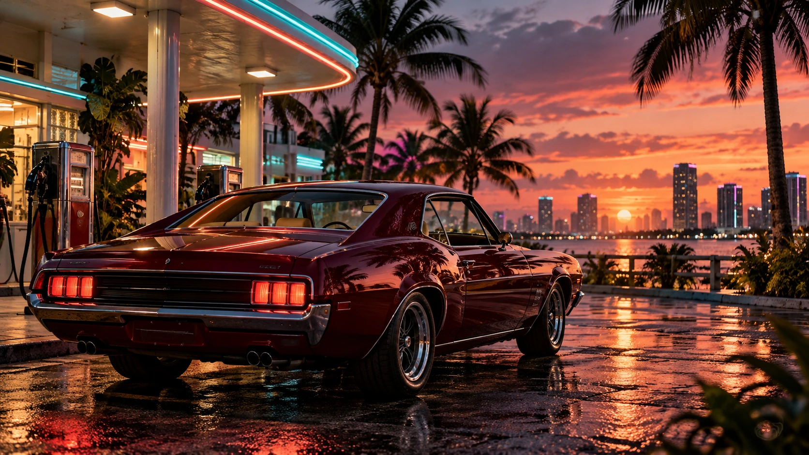

Vice City sa vracia: čo vieme o prostredí GTA VI
Veľkomesto, pobrežie a život za hranicami ulíc. Pozrime sa na svet, ktorý Rockstar predstavil.

GRAND THEFT AUTO VI
Čo už vieme. Čo nám uniklo. A čo je zatiaľ len teória.
VICECORE / SPIS 001
Kto sú. Čo ich spojilo. Kde končia fakty a začínajú naše otázky.
Lucia Caminos sa dostala z väzenia. Jason Duval má za sebou službu v armáde a prácu pre drogových pašerákov v Keys.
Rockstar / People & Places ↗Keď sa jednoduchá lúpež pokazí, dvojica sa ocitne v zločineckom sprisahaní naprieč Leonidou. Budú sa musieť spoliehať jeden na druhého.
Rockstar / GTA VI ↗Ako sa ich vzťah zmení pod tlakom? Budeme niektoré situácie vnímať z oboch perspektív? Toto sú otázky pre náš rozbor, nie potvrdené herné mechaniky.
Preskúmať teóriu ↗
SCREENING ROOM / TRAILER 1
Osem momentov, pri ktorých sa oplatí zastaviť. Prehraj si scénu a pozri sa bližšie.
Otvoriť rozbor ↗© ROCKSTAR GAMES / TRAILER 1ČÍTAREŇ / VICECORE
Databáza / DOSSIERS
Vyber si profil a pokračuj po súvisiacich témach.
01 / 05THE WORLD OF VI


Teórie / NEPOTVRDENÉ
TVOJ VÝBER
Zaujalo ťa niečo? Ulož si článok a pokračuj neskôr.
Moje uložené články ↗Bez registrácie. Uložené v tomto prehliadači.